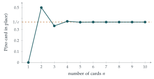

Starting with the result \(\mathrm{P}(A \cup B) = \mathrm{P}(A) + \mathrm{P}(B) - \mathrm{P}(A \cap B)\), prove that \[\begin{aligned} \mathrm{P}(A \cup B \cup C) = {}&\mathrm{P}(A) + \mathrm{P}(B) + \mathrm{P}(C) \\ &- \mathrm{P}(A \cap B) - \mathrm{P}(B \cap C) - \mathrm{P}(C \cap A) + \mathrm{P}(A \cap B \cap C). \end{aligned}\] Write down, without proof, the corresponding result for four events \(A\), \(B\), \(C\) and \(D\).
A pack of \(n\) cards, numbered \(1, 2, \ldots, n\), is shuffled and laid out in a row. The result of the shuffle is that each card is equally likely to be in any position in the row. Let \(E_i\) be the event that the card bearing the number \(i\) is in the \(i\)th position in the row. Write down the following probabilities:
\(\mathrm{P}(E_i)\);
\(\mathrm{P}(E_i \cap E_j)\), where \(i \neq j\);
\(\mathrm{P}(E_i \cap E_j \cap E_k)\), where \(i \neq j\), \(j \neq k\) and \(k \neq i\).
Hence show that the probability that at least one card is in the same position as the number it bears is \[1 - \frac{1}{2!} + \frac{1}{3!} - \cdots + (-1)^{n+1}\frac{1}{n!}.\] Find the probability that exactly one card is in the same position as the number it bears.
The hook
A football team of eleven players changes in a hurry and grabs shirts at random. What is the chance that nobody ends up in their own shirt? Now suppose it is a squad of fifty, or a crowd of a million. Does the chance go up, because there are more people to get it wrong? Or down, because there are more people who might get it right by luck? Remarkably, it hardly changes at all: from five people onwards, the chance is within half a per cent of \(1/e \approx 0.368\).
This is the oldest problem in combinatorial probability, posed by Pierre de Montmort in 1708 as the problème des rencontres. The question solves it with the inclusion–exclusion principle, a tool for counting things that overlap, and the answer is one of the most unexpected appearances of \(e\) in mathematics.
Before you start
Try \(n = 3\): list all six orders of cards \(1, 2, 3\) and count how many have no card in its own place. Then try \(n = 4\), if you are patient (there are \(24\) orders).
For \(n = 3\) only \(231\) and \(312\) have no card in its place, so the probability is \(\frac26 = \frac13\). For \(n = 4\) there are \(9\) such orders out of \(24\), giving \(\frac38 = 0.375\). An arrangement with no fixed card is called a derangement.
Working it through
Stage 1 Inclusion–exclusion for three events
How can you write \(A \cup B \cup C\) as a union of two events, so that the two-event formula applies?
Treat \(A \cup B\) as a single event and apply the formula to it and \(C\): \[\mathrm{P}(A \cup B \cup C) = \mathrm{P}(A \cup B) + \mathrm{P}(C) - \mathrm{P}\bigl((A \cup B) \cap C\bigr).\] Now \((A \cup B) \cap C = (A \cap C) \cup (B \cap C)\), and applying the formula once more, \(\mathrm{P}\bigl((A \cap C) \cup (B \cap C)\bigr) = \mathrm{P}(A \cap C) + \mathrm{P}(B \cap C) - \mathrm{P}(A \cap B \cap C)\). Expanding \(\mathrm{P}(A \cup B)\) too and collecting terms gives the result.■
For four events the pattern continues: add the four single probabilities, subtract the six pairwise intersections, add the four triple intersections, and subtract \(\mathrm{P}(A \cap B \cap C \cap D)\).
Stage 2 The probabilities
If card \(i\) is in position \(i\), how many ways are there to arrange the rest? And if cards \(i\) and \(j\) are both fixed?
There are \(n!\) equally likely orders. If card \(i\) is fixed in position \(i\), the other \(n - 1\) cards can be in any order: \((n - 1)!\) ways. So \[\begin{gathered} \mathrm{P}(E_i) = \frac{(n - 1)!}{n!} = \frac{1}{n}, \qquad \mathrm{P}(E_i \cap E_j) = \frac{(n - 2)!}{n!} = \frac{1}{n(n - 1)}, \\ \mathrm{P}(E_i \cap E_j \cap E_k) = \frac{(n - 3)!}{n!} = \frac{1}{n(n - 1)(n - 2)}. \end{gathered}\] In general, the probability that \(k\) specified cards are all in their own positions is \(\frac{(n - k)!}{n!}\).
Stage 3 Adding it up
In the inclusion–exclusion formula for \(\mathrm{P}(E_1 \cup \cdots \cup E_n)\), how many terms are there involving intersections of \(k\) events, and what is their total?
There are \(\binom{n}{k}\) ways to choose \(k\) of the events, and each intersection has probability \(\frac{(n - k)!}{n!}\). So the \(k\)-fold terms add up to \[\binom{n}{k}\frac{(n - k)!}{n!} = \frac{n!}{k!\,(n - k)!}\cdot\frac{(n - k)!}{n!} = \frac{1}{k!}.\] Everything except the \(k!\) cancels. With alternating signs, \[\mathrm{P}(\text{at least one card in its place}) = 1 - \frac{1}{2!} + \frac{1}{3!} - \cdots + (-1)^{n+1}\frac{1}{n!}. \qed\] So the probability of a derangement is \[d_n = 1 - 1 + \frac{1}{2!} - \frac{1}{3!} + \cdots + (-1)^n\frac{1}{n!} = \sum_{k=0}^{n}\frac{(-1)^k}{k!}.\]
Stage 4 Exactly one
For exactly one card to be in place, which card is it, and what must the others do?
Choose which card is in its place (\(n\) ways). The probability that card \(i\) is in place is \(\frac1n\), and given that, the other \(n - 1\) cards must form a derangement among themselves, which has probability \(d_{n-1}\). So \[\mathrm{P}(\text{exactly one}) = n \cdot \frac{1}{n} \cdot d_{n-1} = \sum_{k=0}^{n-1}\frac{(-1)^k}{k!}. \qed\]
Looking back
Overcount, then correct. Adding the \(\mathrm{P}(E_i)\) counts arrangements with two fixed cards twice; subtracting the pairs corrects this but goes too far for triples; and so on.
Symmetry makes the terms equal. Every \(k\)-fold intersection has the same probability, so each layer of the formula is one number times a binomial coefficient.
Reduce to a smaller case. “Exactly one” became a derangement of \(n - 1\) cards.
What’s really going on
Where \(e\) comes from
The series \(\sum (-1)^k/k!\) is the exponential series \(e^x = \sum x^k/k!\) at \(x = -1\). So as \(n \to \infty\), \[d_n \to e^{-1} \approx 0.3679,\] and the probability of exactly one match tends to the same limit. The convergence is extraordinarily fast (Figure 9.8.1): the error in stopping at \(1/n!\) is less than \(1/(n + 1)!\), so already for \(n = 7\) the answer agrees with \(1/e\) to four decimal places. In fact the number of derangements of \(n\) objects, \(n!\,d_n\), is exactly the nearest integer to \(n!/e\).

The number of matches is Poisson
More is true. Let \(N\) be the number of cards in their own place. Then \(\mathrm{P}(N = k) \to \frac{e^{-1}}{k!}\) for each \(k\): the number of matches has, in the limit, the Poisson distribution with mean \(1\). You can see why the mean is \(1\) without any calculation: \(N\) is the sum of the indicators of \(E_1, \ldots, E_n\), each with expectation \(\frac1n\), and expectation adds even though the events are not independent. STEP III 2004 Q12 (in the exercises) shows that the variance is \(1\) too. The Poisson distribution appears whenever there are many unlikely events that are nearly independent; derangements are a classic example, and the subject of Section 12.11 in Chapter 12.
Pierre Rémond de Montmort, a French nobleman, studied games of chance in his Essay d’analyse sur les jeux de hazard (1708). In the game of treize (thirteen), a player deals thirteen cards, calling out “one, two, three, …” and wins if the card dealt ever matches the number called. Montmort found the probability of winning, and in correspondence with Nicolaus Bernoulli the general formula was established by 1713. Euler rediscovered it in 1753. The inclusion–exclusion principle was later formalised by Abraham de Moivre and, in its general form, by James Joseph Sylvester in the nineteenth century.
The thinking skill
To count a union of overlapping sets, add the sizes of the sets, subtract the pairwise overlaps, add the triple overlaps, and so on.
It is most powerful when symmetry makes all the overlaps of each size equal, as here. At university it appears in combinatorics, in probability and in number theory, where it counts integers not divisible by any of a list of primes, and leads to Euler’s totient function and the Möbius function.
Try this next
Shirts. (From STEP III, 2004.) A team of \(m\) players put on \(m\) numbered shirts at random. Let \(C_i = 1\) if player \(i\) wears shirt \(i\), and \(0\) otherwise. Find \(\mathrm{E}(C_1)\), \(\mathrm{Var}(C_1)\) and \(\mathrm{Cov}(C_1, C_2)\), and show that \(N = C_1 + \cdots + C_m\) has \(\mathrm{E}(N) = \mathrm{Var}(N) = 1\). For \(m = 4\), compare \(\mathrm{P}(N = 0)\) with the Poisson approximation \(e^{-1}\).
A recurrence. Let \(D_n\) be the number of derangements of \(n\) objects. By considering where card \(1\) goes, and whether the card in that position goes to position \(1\), show that \(D_n = (n - 1)(D_{n-1} + D_{n-2})\). Check it against \(D_3 = 2\), \(D_4 = 9\).
Exactly \(k\). Show that the probability that exactly \(k\) cards are in their own places is \(\frac{1}{k!}d_{n-k}\), and that it tends to \(\frac{e^{-1}}{k!}\).
Coprime integers. Use inclusion–exclusion to count the integers from \(1\) to \(30\) divisible by none of \(2\), \(3\) and \(5\). How does your answer relate to \(30\bigl(1 - \frac12\bigr)\bigl(1 - \frac13\bigr)\bigl(1 - \frac15\bigr)\)?
Further reading
Geoffrey Grimmett & Dominic Welsh, Probability: An Introduction (Oxford University Press). A first-year text that covers inclusion–exclusion and the matching problem.
William Feller, An Introduction to Probability Theory and Its Applications, Vol. 1 (Wiley), Chapter IV. A classic, with many variations on the matching problem.
Miklós Bóna, A Walk Through Combinatorics (World Scientific), on inclusion–exclusion.